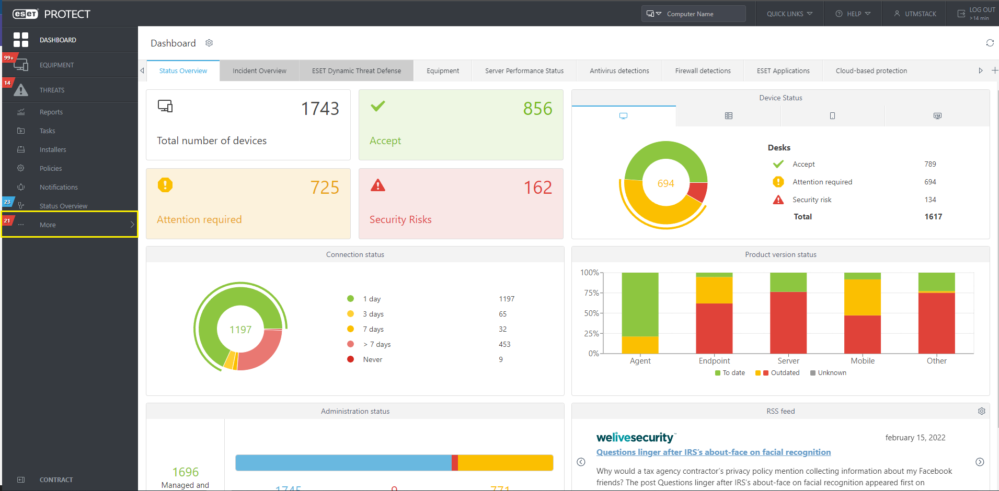
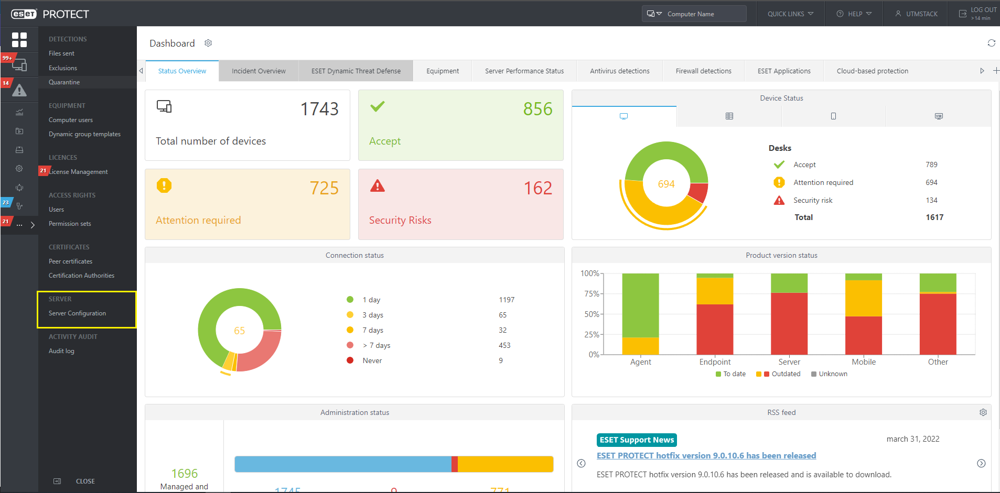
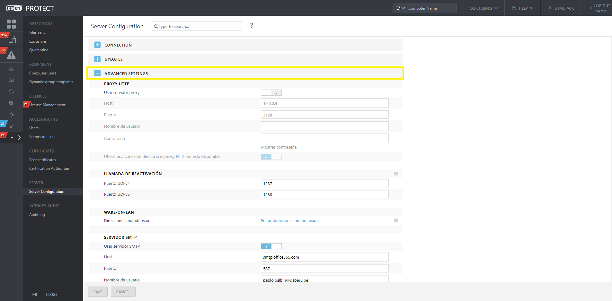

-
1 Click on the "More" menu in the ESET Protect sidebar.
 -
2 Click on the "Server configuration" submenu in the ESET Protect sidebar.
 -
3 Click on "Advanced settings" to deploy the list of configurations.
 -
4 Scroll down to "Syslog server", enable the "Export logs to Syslog" option and configure ESET Protect to send logs to a UTMStack agent to ports:
- 7003 TCP
- 7003 UDP
- 7053 TCP (TLS)

-
5 Enable log collector and this integration in the configuration file which you can find where your UTMStack Agent is located, in the path:
{{paths.os}} -
6 Click on the button shown below, to activate the UTMStack features related to this integration